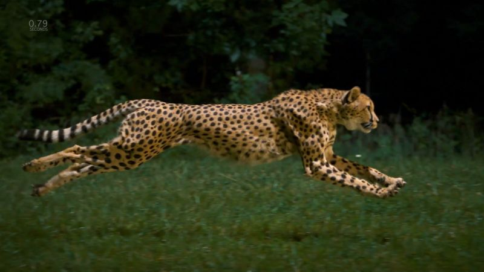

Gepard štíhlý (Acinonyx jubatus) je kočkovitá šelma, známá jako nejrychleji běhající suchozemské zvíře v současné přírodě.Může vyvinout rychlost okolo 100 km/h a vyniká především ve schopnosti měnit akceleraci. To z něj činí jednoho z nejhbitějších savců v přírodě. Loví zvláště různé druhy antilop a gazel.
Jde o zranitelný druh, kterému hrozí nebezpečí vyhubení z důvodu úbytku životního prostředí, konfliktů s farmáři, lovu a velmi nízké genetické variability. Dle zprávy Sarah Durantové z Londýnské zoologické společnosti z konce roku 2016 dosahuje počet gepardů jen 7100 kusů a populace má klesající tendenci.